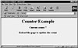
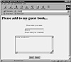

|
|
|
        |
|
|
You used to turn on taint checks in Perl 4 by using a special version of the Perl interpreter named taintperl: #!/usr/local/bin/taintperl However, in version 5, taint checking is built in, and you enable it by passing the -T switch to the Perl interpreter: #!/usr/local/bin/perl -T Here’s an example in which I turn taint checking on but do nothing dangerous, so there’s no problem: #!/usr/local/bin/perl -T print “Hello!\n”; Hello! However, if you use potentially dangerous statements like the system statement with taint checking on, Perl will advise you of a possible security hole coming from environment data; even if you don’t rely on the path when you invoke an external program, there’s a chance that the invoked program might. Here’s the error message you’ll see:
#!/usr/local/bin/perl -T
print system(‘date’);
Insecure $ENV{PATH} while running with -T switch at
taint.cgi line 5, <> chunk 1.
To fix this, you can explicitly set $ENV{‘PATH’} yourself when you use taint checks:
#!/usr/local/bin/perl -T
$ENV{‘PATH’} = ‘/bin:/usr/bin:/usr/local/bin’;
print system(‘date’);
Thu Nov 12 19:55:53 EST
Here’s another example in which I try a system call with tainted data; even though I set $ENV{‘PATH’}, the script still dies because it tries to pass tainted data to the system statement:
#!/usr/local/bin/perl -T
$ENV{‘PATH’} = ‘/bin:/usr/bin:/usr/local/bin’;
while (<>) {
$command = $_;
system($command);
}
Insecure dependency in system while running with -T switch
at taint.cgi line 5, <> chunk 1.
Note that, as shown here, even though the data is assigned from $_ to $command, it’s still tainted. How can you untaint data if you’re sure of it? See the next topic. Untainting DataThe only way to untaint a tainted variable is by using pattern matching to extract substrings from the tainted variable. Here’s an example in which we expect a tainted variable, $tainted, to hold an email address. We might extract that address and store it as untainted data this way: $tainted =~ /(^[\w]+)\@([\w.]+)/; $username = $1; $domain = $2; print “$username\n”; print “$domain\n”; In this way, we’ve extracted safe data from a tainted variable. That’s the way you create untainted data—by extracting substrings you know to be safe (and explicitly avoiding shell metacharacters) from tainted data. Giving A CGI Script More Privileges In UnixBecause your CGI scripts run in Unix under the system ID as “nobody,” they don’t have a lot of privileges. You might want more privileges to let your script perform certain operations, such as creating files. You can give your CGI script more privileges, but this is such an unsecured operation that you should consider all other possible options first, then only do it with extreme care. You can run a Perl script as suid, which means it will have the same privileges as its owner (that is, you). Note that you must have a really good reason for doing this and should remove these privileges as soon as practical. You can make a script run as suid by setting its s bit with chmod: chmod u+s script1.pl You can also make a script run with its owner’s group privileges by setting the s bit in its group field with chmod: chmod g+s script1.pl Note, however, that a number of Unix systems have a subtle security hole that allows suid scripts to be used for hostile purposes. How can you tell if you’re on such a system? If you are, you’ll get an error message from Perl if you try to execute a script with its suid bits set.
Creating A Web CounterCreating a Web counter script isn’t difficult: you only have to store the current count in a file and display that count as required. I’ll create an example Web counter named counter.cgi here.
This script is called counter.cgi, and it appears in Listing 20.1. To use it, you must create a file named counter.dat in the same directory as counter.cgi; to start the count, place 0 (zero) in counter.dat using a text editor, and make that file’s permission low enough to be able to be written to by CGI scripts on your system. (Avoid trying to create counter.dat from the script if that file doesn’t exist because your system probably won’t let CGI scripts running under default privileges create files in your directories.) Listing 20.1 counter.cgi.
#!/usr/bin/perl
use CGI;
$co = new CGI;
open (COUNT, “<counter.dat”) or die “Could not open counter
data file.”;
$count = <COUNT>
close COUNT;
$count++;
open (COUNT, “>counter.dat”);
print COUNT $count;
close COUNT;
print
$co->header,
$co->start_html(
-title=>‘Counter Example’,
-author=>‘Steve’,
-BGCOLOR=>‘white’,
),
$co->center($co->h1(‘Counter Example’)),
$co->p,
$co->center($co->h3(“Current count: ”, $count)),
$co->p,
$co->center($co->h3(“Reload the page to update the count”)),
$co->end_html;
This script is very easy: all it does is read the number in counter.dat, increment that number, write it back to counter.dat, then display the incremented count. The result appears in Figure 20.1. 
Creating A Guest BookCreating a guest book is one step up from creating a Web counter (see the previous topic). A guest book takes comments from users and stores them in a file, usually an HTML file, so these comments—and comments entered by previous users—can be displayed. This guest book uses three files, all of which are placed in the same directory by default: guestbook.htm, which appears in Listing 20.2; guestbook.cgi, which appears in Listing 20.3; and book.htm, which appears in Listing 20.4. The guestbook.htm file is the front end for the guest book—that is, the page you direct users to so they can add to the guest book. That Web page takes the user’s name and guest book comments, as shown in Figure 20.2. When the user clicks the submit button, the data is sent to guestbook.cgi, which means if you use this script, you should change the generic URL in guestbook.htm to point to your URL for guestbook.cgi: <BODY> <H1>Add to the guestbook...</H1> <FORM METHOD = POST ACTION = “<http://www.yourserver.com/username/cgi/guestbook.cgi>”> <BR> 
In guestbook.cgi (see Listing 20.3), we open the guest book itself, which is stored in book.htm. The idea is to append the new name and comments to the end of book.htm, but note that book.htm ends with the usual </BODY></HTML> tags. This means that we’ll first move the file pointer to the start of these tags with this code:
open (BOOK, “>>book.htm”) or die “Could not open guest
book.”;
seek (BOOK, -length($co->end_html), 2);
Copyright © The Coriolis Group, Inc.
|
 |
         |
|

){kind=link}
){kind=link}
){kind=link}
){kind=link}